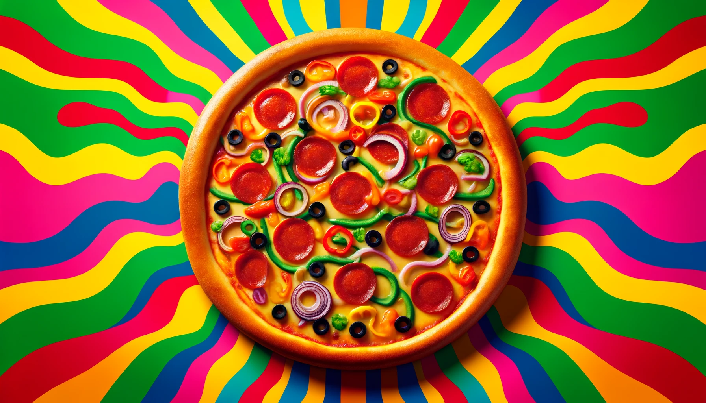

Pizza

Today, we'll be making a pretty cool pizza. Get ready for a sweet time.
Ingredients
- Pizza dough
- Tomato sauce
- Mozzarella cheese
- Pepperoni
- Green bell peppers
- Black olives
- Red onions
- Mushrooms
Instructions
-
Preheat your oven to 475°F (245°C) and place a pizza stone or an
inverted baking sheet inside to heat up.
-
Roll out the pizza dough on a floured surface to your desired
thickness. Transfer the rolled dough to a piece of parchment paper
for easy handling.
-
Spread an even layer of tomato sauce over the dough, leaving a small
border around the edges for the crust.
-
Sprinkle a generous amount of shredded mozzarella cheese evenly over
the tomato sauce.
-
Add slices of peperroni, green bell peppers, black olives, red
onions, and mushrooms in a visually appealing, almost psychedelic
pattern.
-
Carefully transfer the pizza (with the parchment paper) onto the
preheated pizza stone or baking sheet.
-
Bake for 10-15 minutes, or until the crust is golden and the cheese
is melted and bubbly.
-
Remove the pizza from the oven and let it cool for a few minutes.
- Slice and serve your groovy pizza hot. Enjoy!